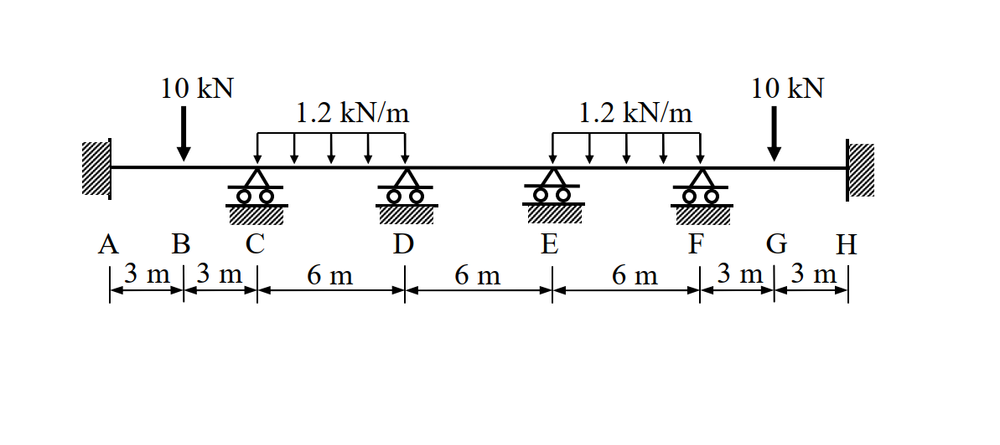

主分類: "SA-U2-3"
副分類: []
難易度: 3
97年結構工程技師高考 結構學 第二題
1. 原始題目重述 (Problem Restatement)
試以傾角變位法 (slope-deflection method) 計算圖示連續梁各結點處之彎矩與剪力，並繪彎矩圖與剪力圖。圖中 A、H 兩點為固接 (fixed)，其餘支承均為滾支承 (roller)。已知梁之彈性模數 $E$ 與慣性矩 $I$ 為常數。(25 分)

圖說：(待補充說明)
(註：連續梁共五跨，支承點為 A, C, D, E, F, H。A、H 為固定端，C, D, E, F 為滾支承。跨距分別為 $L_{AC}=6\text{m}$ (B 為中點), $L_{CD}=6\text{m}$, $L_{DE}=6\text{m}$, $L_{EF}=6\text{m}$, $L_{FH}=6\text{m}$ (G 為中點)。B、G 點各有向下集中載重 $10\text{ kN}$，CD 跨與 EF 跨有向下均佈載重 $1.2\text{ kN/m}$)
2. 考題核心精神與出題者意圖 (Core Concepts & Examiner's Intent)
本題為典型的多跨連續梁 (Multi-span Continuous Beam) 分析，指定使用傾角變位法 (Slope-Deflection Method)。出題者的核心意圖在於：
- 對稱性的觀察與利用 (Symmetry Analysis)：本題的幾何結構、邊界條件與外加載重均對稱於中心點 (即 DE 跨之中點)。利用對稱性條件 $\theta_C = -\theta_F$ 與 $\theta_D = -\theta_E$，可將原本 4 個未知節點旋轉角 (C, D, E, F) 的聯立方程式大幅簡化為僅含 2 個未知數 ($\theta_C, \theta_D$) 的系統，這是本題最核心的解題鑰匙。
- 傾角變位法標準作業流程：測驗考生是否熟悉固端彎矩 (FEM) 的計算、基本傾角變位方程式的列式，以及透過節點力矩平衡 ($\Sigma M=0$) 建立聯立方程式。
- 內力圖繪製基本功：在求得各端彎矩後，利用分離體自由體圖 (FBD) 與靜力平衡計算各跨端剪力，最後繪製精確的剪力圖與彎矩圖。
3. 解題戰略地圖與陷阱分析 (Strategic Roadmap & Trap Analysis)
解題戰略：
- 第一步：系統分析與對稱性確認：結構總長 $30\text{m}$，對稱軸位於 $x=15\text{m}$ (即 DE 跨中點)。載重完全對稱。由於對稱結構承受對稱載重，變形亦呈對稱。邊界條件 $\theta_A = \theta_H = 0$。對稱條件為 $\theta_C = -\theta_F, \theta_D = -\theta_E$。
- 第二步：計算固端彎矩 (FEM)：各跨分別計算：
- AC 跨、FH 跨受中央集中載重 $P=10\text{ kN}$，FEM 為 $\pm \frac{PL}{8}$。
- CD 跨、EF 跨受均佈載重 $w=1.2\text{ kN/m}$，FEM 為 $\pm \frac{wL^2}{12}$。
- DE 跨無外載重，FEM 為 $0$。
- 第三步：建立傾角變位方程式：令相對勁度 $K = \frac{EI}{L}$，對 C 節點與 D 節點相鄰的桿端彎矩列出方程式。
- 第四步：建立節點平衡方程式：利用 $\Sigma M_C = M_{CA} + M_{CD} = 0$ 與 $\Sigma M_D = M_{DC} + M_{DE} = 0$，解出 $\theta_C$ 與 $\theta_D$。
- 第五步：計算端彎矩與端剪力：將旋轉角代回傾角變位方程式求得所有端彎矩，並以各跨之分離體圖求得各端剪力。
陷阱分析：
- 陷阱 1：忽視對稱性。若未看出對稱性，直接列出包含 $\theta_C, \theta_D, \theta_E, \theta_F$ 的四元一次聯立方程式，計算量極大且易算錯。
- 陷阱 2：固端彎矩的符號。傾角變位法標準符號系統約定順時針為正。受重力（向下）載重時，左端 FEM 為負，右端 FEM 為正。符號標錯將全盤皆輸。
- 陷阱 3：DE 跨無載重的錯覺。DE 跨雖無外載，但兩端節點受相鄰跨傳遞的彎矩影響，會產生旋轉 ($\theta_D \neq 0$)，故其端彎矩不為零。
3.5 變數層次分析 (Variable Hierarchy Analysis)
最終目標
求出連續梁各結點處之彎矩 ($M_{AC}, M_{CA}, \dots, M_{HF}$) 與剪力 ($V_{A}, V_{C,L}, \dots, V_{H}$)。
本題關鍵公式（依計算順序）
- 固端彎矩 (FEM)：集中載重 $M^F = \pm \frac{PL}{8}$，均佈載重 $M^F = \pm \frac{wL^2}{12}$
- 傾角變位方程式：$M_{ij} = \frac{2EI}{L} (2\theta_i + \theta_j) + M^F_{ij}$
- 節點平衡方程式：$\Sigma M_{node} = \sum M_{ij} = 0$
- 跨端剪力：$V_i = V_{0,i} + \frac{M_{ij} + M_{ji}}{L}$ ($V_{0,i}$ 為簡支梁剪力)
L1：題目直接給定
| 符號 | 數值 | 說明 |
|---|---|---|
| $L$ | $6\text{ m}$ | 所有跨距皆為 $6\text{ m}$ (AC, CD, DE, EF, FH) |
| $P_B, P_G$ | $10\text{ kN}$ | AC、FH 跨中央集中載重 |
| $w_{CD}, w_{EF}$ | $1.2\text{ kN/m}$ | CD、EF 跨均佈載重 |
L2：需知識點推導
一、變形條件與固端彎矩
| 符號 | 公式／來源 | 卡關? |
|---|---|---|
| $K$ | $\frac{EI}{6}$ | 桿件相對勁度 |
| $\theta$ 關係 | $\theta_A = \theta_H = 0$, $\theta_F = -\theta_C$, $\theta_E = -\theta_D$ | 由對稱性得 |
| $M^F_{AC}$ | $-\frac{10 \times 6}{8} = -7.5\text{ kN-m}$ | |
| $M^F_{CD}$ | $-\frac{1.2 \times 6^2}{12} = -3.6\text{ kN-m}$ | |
4. 步驟化詳細計算過程 (Step-by-Step Detailed Calculation)
步驟 1：固端彎矩 (Fixed-End Moments) 計算
約定順時針為正：
-
AC 跨 (集中載重 $10\text{ kN}$ 於中央)：
$FEM_{AC} = -\frac{P L}{8} = -\frac{10 \times 6}{8} = -7.5\text{ kN-m}$
$FEM_{CA} = +\frac{P L}{8} = +7.5\text{ kN-m}$ -
CD 跨 (均佈載重 $1.2\text{ kN/m}$)：
$FEM_{CD} = -\frac{w L^2}{12} = -\frac{1.2 \times 6^2}{12} = -3.6\text{ kN-m}$
$FEM_{DC} = +\frac{w L^2}{12} = +3.6\text{ kN-m}$ -
DE 跨 (無載重)：
$FEM_{DE} = 0$
$FEM_{ED} = 0$ -
EF 跨與 FH 跨 (由對稱性或直接計算)：
$FEM_{EF} = -3.6\text{ kN-m}$, $FEM_{FE} = +3.6\text{ kN-m}$
$FEM_{FH} = -7.5\text{ kN-m}$, $FEM_{HF} = +7.5\text{ kN-m}$
步驟 2：建立傾角變位方程式
令各跨相對勁度為 $K = \frac{EI}{6}$，因此 $2K = \frac{EI}{3}$。已知邊界條件 $\theta_A = 0$。無支承沉陷 $\Delta = 0$。
- $M_{AC} = 2K(2\theta_A + \theta_C) - 7.5 = \frac{EI}{3}(\theta_C) - 7.5$
- $M_{CA} = 2K(2\theta_C + \theta_A) + 7.5 = \frac{EI}{3}(2\theta_C) + 7.5$
- $M_{CD} = 2K(2\theta_C + \theta_D) - 3.6 = \frac{EI}{3}(2\theta_C + \theta_D) - 3.6$
- $M_{DC} = 2K(2\theta_D + \theta_C) + 3.6 = \frac{EI}{3}(2\theta_D + \theta_C) + 3.6$
- $M_{DE} = 2K(2\theta_D + \theta_E) + 0 = \frac{EI}{3}(2\theta_D + \theta_E)$
步驟 3：建立並求解節點平衡方程式
利用結構對稱性，將右半部變數替換：$\theta_E = -\theta_D$。
-
節點 C 力矩平衡：$\Sigma M_C = M_{CA} + M_{CD} = 0$
$$ \frac{EI}{3}(2\theta_C) + 7.5 + \frac{EI}{3}(2\theta_C + \theta_D) - 3.6 = 0 $$
$$ \frac{EI}{3}(4\theta_C + \theta_D) = -3.9 \implies 4\theta_C + \theta_D = -\frac{11.7}{EI} = -\frac{117}{10 EI} \quad \text{--- (式 1)} $$ -
節點 D 力矩平衡：$\Sigma M_D = M_{DC} + M_{DE} = 0$
代入 $\theta_E = -\theta_D$：
$M_{DE} = \frac{EI}{3}(2\theta_D - \theta_D) = \frac{EI}{3}(\theta_D)$
$$ \frac{EI}{3}(2\theta_D + \theta_C) + 3.6 + \frac{EI}{3}(\theta_D) = 0 $$
$$ \frac{EI}{3}(\theta_C + 3\theta_D) = -3.6 \implies \theta_C + 3\theta_D = -\frac{10.8}{EI} = -\frac{108}{10 EI} \quad \text{--- (式 2)} $$
解 (式 1) 與 (式 2) 之聯立方程式：
(式 1) $\times 3 \implies 12\theta_C + 3\theta_D = -\frac{351}{10 EI}$
減去 (式 2) $\implies 11\theta_C = -\frac{243}{10 EI} \implies \theta_C = -\frac{243}{110 EI}$
代回 (式 2) $\implies -\frac{243}{110 EI} + 3\theta_D = -\frac{1188}{110 EI} \implies 3\theta_D = -\frac{945}{110 EI} \implies \theta_D = -\frac{63}{22 EI}$
步驟 4：回代求各端彎矩
將 $\theta_C$ 與 $\theta_D$ 代回方程式，得確切端彎矩值：
- $M_{AC} = \frac{EI}{3}\left(-\frac{243}{110 EI}\right) - \frac{15}{2} = -\frac{81}{110} - \frac{825}{110} = -\frac{906}{110} = \mathbf{-\frac{453}{55} \approx -8.236\text{ kN-m}}$
- $M_{CA} = \frac{EI}{3}\left(2 \times -\frac{243}{110 EI}\right) + \frac{15}{2} = -\frac{162}{110} + \frac{825}{110} = \mathbf{\frac{663}{110} \approx 6.027\text{ kN-m}}$
- $M_{CD} = \frac{EI}{3}\left(2 \times -\frac{243}{110 EI} - \frac{63}{22 EI}\right) - 3.6 = \frac{EI}{3}\left(-\frac{486}{110 EI} - \frac{315}{110 EI}\right) - 3.6 = -\frac{801}{330} - \frac{1188}{330} = -\frac{1989}{330} = \mathbf{-\frac{663}{110} \approx -6.027\text{ kN-m}}$
- $M_{DC} = \frac{EI}{3}\left(2 \times -\frac{63}{22 EI} - \frac{243}{110 EI}\right) + 3.6 = \frac{EI}{3}\left(-\frac{630}{110} - \frac{243}{110}\right) + 3.6 = -\frac{873}{330} + \frac{1188}{330} = \frac{315}{330} = \mathbf{\frac{21}{22} \approx 0.955\text{ kN-m}}$
- $M_{DE} = \frac{EI}{3}\left(-\frac{63}{22 EI}\right) = \mathbf{-\frac{21}{22} \approx -0.955\text{ kN-m}}$
依據對稱性，右半部彎矩大小相等且符號相反：
- $M_{ED} = -M_{DE} = \mathbf{\frac{21}{22} \approx 0.955\text{ kN-m}}$
- $M_{EF} = -M_{DC} = \mathbf{-\frac{21}{22} \approx -0.955\text{ kN-m}}$
- $M_{FE} = -M_{CD} = \mathbf{\frac{663}{110} \approx 6.027\text{ kN-m}}$
- $M_{FH} = -M_{CA} = \mathbf{-\frac{663}{110} \approx -6.027\text{ kN-m}}$
- $M_{HF} = -M_{AC} = \mathbf{\frac{453}{55} \approx 8.236\text{ kN-m}}$
步驟 5：跨端剪力計算
以各跨自由體圖與 $\Sigma M = 0$ 計算各端剪力 $V = V_0 + \frac{M_{left} + M_{right}}{L}$：
-
AC 跨：$V_0 = 5\text{ kN}$
$V_A = 5 + \frac{-453/55 + 663/110}{6} = \mathbf{\frac{1019}{220} \approx 4.632\text{ kN}}$
$V_{C,left} = 10 - V_A = \mathbf{\frac{1181}{220} \approx 5.368\text{ kN}}$ -
CD 跨：$V_0 = \frac{1.2 \times 6}{2} = 3.6\text{ kN}$
$V_{C,right} = 3.6 + \frac{-663/110 + 21/22}{6} = \mathbf{\frac{303}{110} \approx 2.755\text{ kN}}$
$V_{D,left} = 7.2 - V_{C,right} = \mathbf{\frac{489}{110} \approx 4.445\text{ kN}}$ -
DE 跨：$V_0 = 0$
$V_{D,right} = 0 + \frac{-21/22 + 21/22}{6} = \mathbf{0\text{ kN}}$
$V_{E,left} = 0 - 0 = \mathbf{0\text{ kN}}$ -
EF 跨與 FH 跨：
依據對稱性，剪力圖呈反對稱分佈：
$V_{E,right} = V_{D,left} = \mathbf{\frac{489}{110} \approx 4.445\text{ kN}}$
$V_{F,left} = V_{C,right} = \mathbf{\frac{303}{110} \approx 2.755\text{ kN}}$
$V_{F,right} = V_{C,left} = \mathbf{\frac{1181}{220} \approx 5.368\text{ kN}}$
$V_{H} = V_A = \mathbf{\frac{1019}{220} \approx 4.632\text{ kN}}$
5. 關鍵爭議點與進階探討 (Critical Issues & Advanced Discussion)
- 對稱性的強大優勢：本題如果不使用對稱性，須解 $4 \times 4$ 矩陣，在沒有計算機輔助的考場上幾乎不可能精準算對。利用對稱性條件 $\theta_C = -\theta_F, \theta_D = -\theta_E$，方程式瞬間降階為 $2 \times 2$，極大降低了計算難度與犯錯機率。
- 無載重跨 (DE 跨) 的零剪力特徵：計算顯示 DE 跨的剪力處處為零（$V_{D,right} = V_{E,left} = 0$）。這是因為 DE 跨的兩端彎矩 $M_{DE}$ 與 $M_{ED}$ 數值互為相反數（大小相等、符號相反），且本身無外加載重。這意味著 DE 跨全段處於純彎矩 (Pure Bending) 狀態，無任何剪力存在，是非常優美的力學現象，可用作防呆檢查。
- 彎矩圖與剪力圖的繪製：由求得的端彎矩與剪力，可輕易繪製圖形。AC 跨與 FH 跨由於受集中力作用，彎矩圖呈三角形折線變化；CD 跨與 EF 跨受均佈載重，彎矩圖為二次拋物線；DE 跨則為水平直線（純彎矩），彎矩恆為 $0.955\text{ kN-m}$，剪力恆為零。